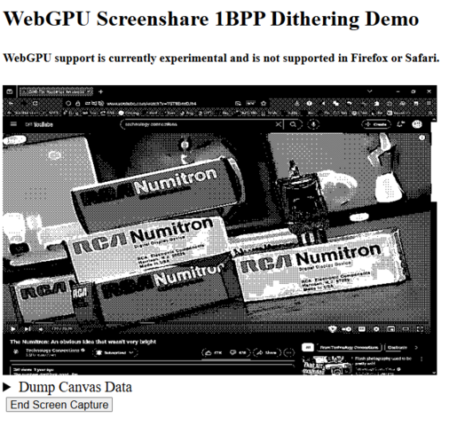

WebGPU Realtime Video Dithering |
|
Live DemoThis is a demo application I created which captures the users screen with the getDisplayMedia() API and utilizes WebGPU to apply processing such as edge detection, luminance threshholding, and saturation masking to this video stream in order to reduce the full color 24 bit per pixel video to one bit per pixel monochrome dithered image. This project was created mainly as a learning oppurtunity to farmiliarize myself with WebGPU as I had previously implemented a similar demo by using WebGL but was frustrated by it's lack of flexibility, specifically when it came to processing data and transfering information between the CPU and GPU. WebGPU alleviates much of this frustration by allowing lower level control of the GPU's resources and data processing pipelines, in exchange for a more complex and verbose API. This is a worthy tradeoff in my opinion as it allows for WebGPU to be leveraged for a wide variety of tasks once the basics are understood, in contrast with the often more limited and graphics specialized WebGL API. This demo specifically leverages both the render and compute shaders of WebGPU making use of the more flexible data handling, multiple render targets, even reusing data from previous render passes. The vertex shader is simply used to draw a canvas for the video texture to be projected onto, and the fragment shader is used to do the lions share of the computation. applying the edge detection, luminance threshholding, and saturation masking to the video texture aiming to extract maximum legibility from the video stream before slashing its color depth to bitonal black and white. The first an RGBA8unorm texture for display upon an HTML5 canvas element and the second a R8unorm texture for further processing by the compute shader. The compute shader utilizes the R8 texture to compress the bitonal image data to truly one bit per pixel by batch processing 32 pixels at a time and fitting them within a single 32 bit integer which is then placed in a buffer for read back to the CPU. The compute shader is also used to do some minor bit order reversal to ensure that the image pixels can be extracted in the proper order for display. This compression drastically cuts down on the time required to read back data to the CPU as the image data is now 32 times smaller than the origional data and was one of the primary reasons for the porting of this demo to WebGPU from WebGL as many of the alternate colorspaces for textures such as R8unorm and RGB5A1unorm are optional implementations that are seldom implemented. This data handling flexibility with buffers even allows for the addition of extra featues such as the comparing of the output of this render pass with the output of the previous render pass and creating an XOR change map representing only the pixels that have changed between the two frames for more efficent video compression. This is a feature that would be practically impossible to implement in WebGL due to the lack of data handling flexibility and the immense overhead of reading data back from the CPU and processing the changes in Javascript withought the multithreaded advantage of the GPU. I am very satisfied with the outcome of this excersize as it allowed me to farmillarize myself with the basics of WebGPU and experiment with different types of data processing and optimisations. There were multiple times while programming This demo where I spent hours simply having fun tweaking and experimenting with layouts and parameters of the render passes to see what kind of effects I could achieve and if there was any more preformance that I could squeeze out. |
|
Strayer Russell 2025 | |